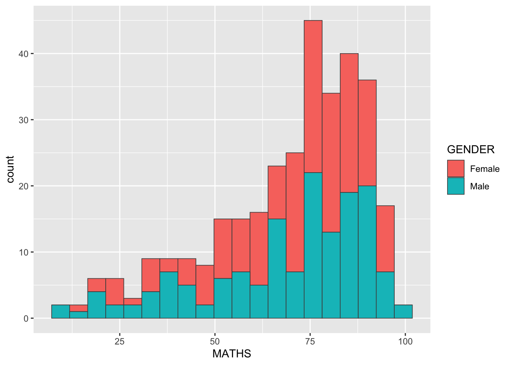
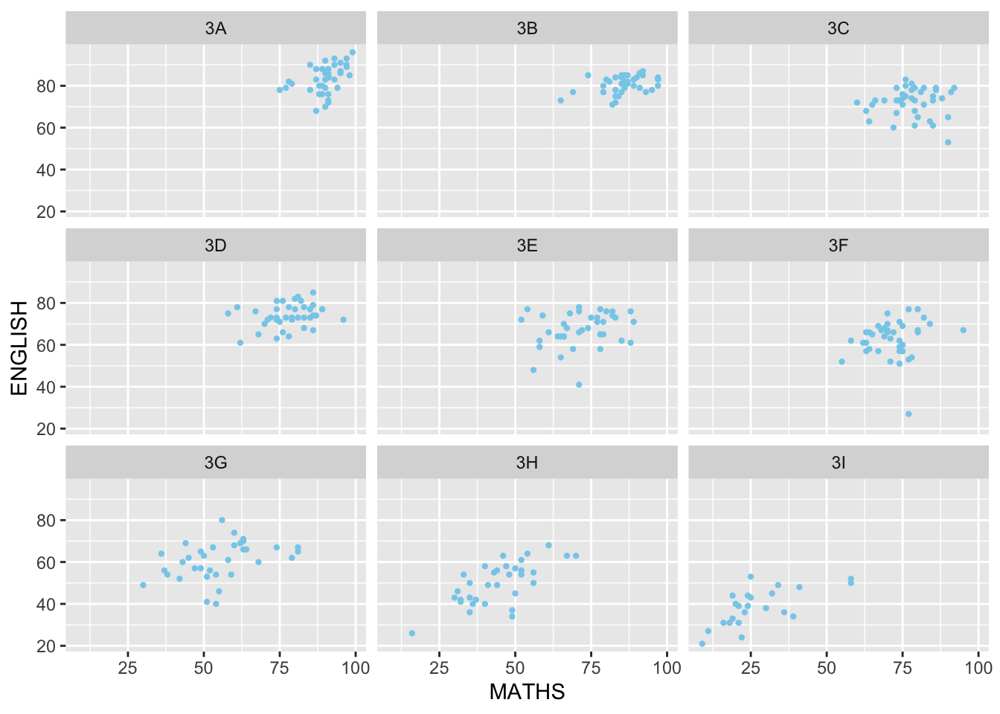
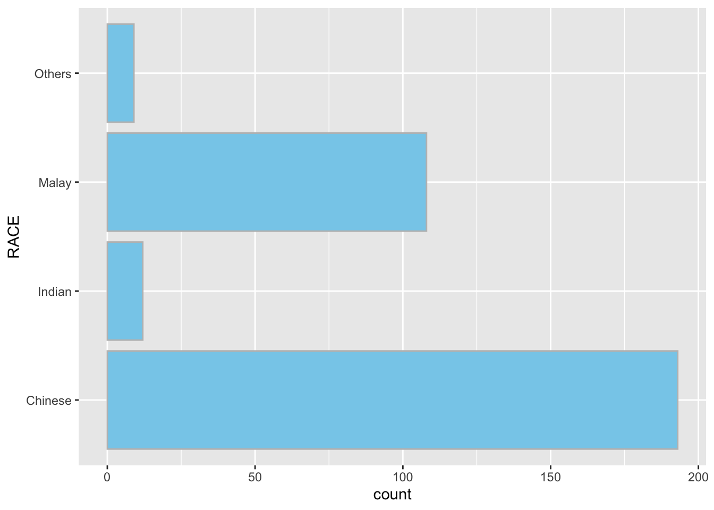

pacman::p_load(tidyverse)Hands-on_Ex01
A Layered Grammar of Graphics: ggplot2 methods
1.2 Getting started
1.2.1 Installing and loading the required libraries
🔑 pacman package has been installed in the workshop, using the following code.
1.2.2 Importing data
read_csv is a function of readr package, which is from the tidyverse package.
The dataset Exam_data.csv, containing exam grades of P3 students from a Singapore local school is imported into R environment.
🔑 The code chunk below was used to import the dataset.
exam_data <- read_csv("data/Exam_data.csv")| ID | CLASS | GENDER | RACE | MATHS | ENGLISH | SCIENCE |
| Student321 | 3I | Male | Malay | 21 | 9 | 15 |
| Student305 | 3I | Female | Malay | 24 | 22 | 1 |
1.3 Introducing ggplot
ggplot2 is part of the tidyverse family specially designed for visual exploration and communication. It creates graphics based on The Grammar of Graphics.
Cheatsheet for ggplot2 (Learn more)
1.3.1 R Graphics vs. ggplot
🔑 Observe how R Graphics and ggplot are different when plotting a simple histogram. An example below:
hist(exam_data$MATHS)
ggplot(data=exam_data, aes(x = MATHS)) +
geom_histogram(bins=10,
boundary=100,
color="snow4",
fill="mistyrose") +
ggtitle("Distribution of Math Scores")
🦖 PRACTICE
Practice plotting the different charts for English.
hist(exam_data$ENGLISH)
ggplot(data=exam_data,
aes(x = ENGLISH)) +
geom_histogram(bins = 10,
boundary = 100,
color = "black",
fill = "skyblue") +
ggtitle("Distribution of English Scores")
ggplot(data=exam_data,
aes(x = GENDER,
y = ENGLISH)) +
geom_boxplot(outlier.colour = "skyblue",
outlier.fill = "skyblue",) +
ggtitle("Distribution of English Scores")
1.4 Grammar of Graphics
❓ What is a statistical graphic?
Understanding the principles of grammar of graphics: a general scheme for data visualisation which breaks up graphs into semantic components such as scales and layers.
It was introduced by Leland Wlkinson (1999). It defines the rules of structural mathematical and aesthetic elements into a meaningful graph.
Note
Two principles in grammar of graphics are:
Graphics= distinct layers of grammatical elementsMeaningful plotsthrough aesthetic mapping
Note
A good grammar of graphics has the following characters:
- Allows us to gain insights into the composition of complicated graphics.
- Reveals unexpected connections between seemingly different graphics (Cox 1978).
- Provides a strong foundation for understanding a diverse range of graphics.
- May also help guide us on what a well-formed or correct graphic looks like, but there will still be many grammatically correct but nonsensical graphics.
1.4.1 A Layered Grammar of Graphics
ggplot2 is an implementation of Leland Wilkinson’s Grammar of Graphics. Figure below shows the seven grammars of ggplot2.

Reference: Hadley Wickham (2010) “A layered grammar of graphics.” Journal of Computational and Graphical Statistics, vol. 19, no. 1, pp. 3–28.
Important
A short description of each building blocks:
Data: the dataset being plotted.Aesthetic: takes attributes of the data and use them to influence visual characteristics, such as position, colours, size, shape, or transparency.Geometrics: the visual elements used for our data, such as point, bar or line.Facets: split the data into subsets to create multiple variations of the same graph (paneling, multiple plots).Statistics: statistical transformations that summarise data (e.g. mean, confidence intervals).Coordinate systems: define the plan on which data are mapped on the graphic.Themes: modify all non-data components of a plot, such as main title, sub-title, y-axis title, or legend background.
1.5 Essential Grammatical Elements in ggplot2: data
🔑 Calling the ggplot() function, using the code chunk below:
ggplot(data=exam_data)
Note
- A blank canvas appears.
ggplotinitializes a ggplot object.- The data argument defines the dataset to be used for plotting.
- If the dataset is not aleady a data.frame, it will be converted to one by
fortify().
1.6 Essential Grammatical Elements in ggplot2: Aesthetic mappings
The aesthetic mappings take attributes of the data and use them to influence visual characteristics, such as position, colour, size, shape, or transparency. Each visual characteristic can this encode an aspect of the data and be used to convey information.
- All aesthetic of a plot are specified in the
aes()function call.
🚀 Usage aes(x,y,…)
The names for x and y aesthetics are typically omitted because they are so common; all other aesthetics must be named.
- Each geom layer can have its own aes specification.
🔑 Code chunk below adds the aesthetic element into the plot.
🚀 To display line numbers alongside the code block, can use the code-line-numbers attribute.
For example, {.r code-line-numbers="true"}
Note
- ggplot includes the x-axis and the axis’s label.
Aesthetic specifications
1.7 Essential Grammatical Elements in ggplot2: geom
Geometric objects are the actual marks we put on a plot. Examples include:
- geom_point for drawing individual points (e.g., a scatter plot)
- geom_line for drawing lines (e.g., for a line charts)
- geom_smooth for drawing smoothed lines (e.g., for simple trends or approximations)
- geom_bar for drawing bars (e.g., for bar charts)
- geom_histogram for drawing binned values (e.g., a histogram)
- geom_polygon for drawing arbitrary shapes
- geom_map for drawing polygons in the shape of a map! (data can be accessed for these maps by using the
map_data()function). - A plot must have one geom, but there is no limit. Add a geom to a plot using the + operator.
🦄 Complete list of geom layers

R colors
Color codes for R as a resource.
cl <- colors()
length(cl); cl[1:20] #display 1-20[1] 657 [1] "white" "aliceblue" "antiquewhite" "antiquewhite1"
[5] "antiquewhite2" "antiquewhite3" "antiquewhite4" "aquamarine"
[9] "aquamarine1" "aquamarine2" "aquamarine3" "aquamarine4"
[13] "azure" "azure1" "azure2" "azure3"
[17] "azure4" "beige" "bisque" "bisque1" 1.7.1 Geometric Objects: geom_bar
🔑 Code chunk below to plot a bar chart using geom_bar()
ggplot(data=exam_data,
aes(x=RACE)) +
geom_bar()
❓ Code won’t run when using {r code-line-numbers="true"}
1.7.2 Geometric Objects: geom_dotplot
In a dot plot, the width of a dot corresponds to the bin width (or maximum width, depending on the binning algorithm), and dots are stacked, with each dot representing one observation.
🔑 geom_dotplot() of ggplot2 is used to plot a dot plot with the code chunk below.
ggplot(data=exam_data,
aes(x = MATHS)) +
geom_dotplot(dotsize = 0.5)
Be warned
The y scale could be misleading, so isn’t useful.
Note
The code chunk below performs the following 2 steps:
scale_y_continuous()is sued to turn off the y-axis, and- binwidth argument is used to change the binwidth to 2.5.
ggplot(data=exam_data,
aes(x = MATHS)) +
geom_dotplot(binwidth = 2.5,
dotsize = 0.5) +
scale_y_continuous(NULL,
breaks = NULL)
1.7.3 Geometric Objects: geom_histogram()
🔑 In the code chunk below, geom_histogram() is used to create a simple histogram by using values in MATHS field of exam_data.
🚀 Histograms (geom_histogram()) display the counts with bars; frequency polygons (geom_freqpoly()) display the counts with lines.
Frequency polygons are more suitable when you want to compare the distribution across the levels of a categorical variable.
ggplot(data = exam_data,
aes(x = MATHS)) +
geom_histogram()
Note
Note that the default bin is 30.
1.7.4 Modify a geometric object by changing geom()
In the code chunk below,
- bins argument is used to change the number of of bins to 20,
- fill argument is used to shade the histogram with light blue color, and
- color argument is used to change the outline colour of the bars in black.

1.7.5 Modify a geometric object by changing aes()
The code chunk below changes the interior colour of t he histogram (i.e. fill) by using sub-group of aesthetic().

Note
The approach can be used to colour, fill and alpha of the geometric.
1.7.6 Geometric Objects: geom_density()
geom_density() computes and plots kernel density estimate, which is a smoothed version of the histogram.
🦄 geom-density() understands the following aesthetics: x, y, alpha, colour, fill, group, linetype, linewidth, weight.
It is a useful alternative to the histogram for continuous data that comes from an underlying smooth distribution.
🔑 The code below plots the distribution of Maths scores in a kernel density estimate plot.

🔑 The code chunk below plots two kernel density lines by using colour or fill arguments of aes()

1.7.7 Geometric Objects: geom_boxplot
geom_boxplot() displays continuous value list. It visualises five summary statistics (the median, two hinges and two whiskers), and all “outlying” points individually.
🦄 geom_boxplot() understands the following aesthetics:
x or y, lower or xlower, upper or xupper, middle or xmiddle, ymin or xmin, ymax or xmax, alpha, colour, fill, group, linetype, linewidth, shape, size, weight.
🔑 The code chunk below plots boxplots by using geom_boxplot()

Notches are used in box plots to help visually assess whether the medians of distributions differ. If the notches do not overlap, this is evidence that the medians are different.
🔑 The code chunk below plots the distribution of Maths scores by gender in notched plot instead of boxplot.

1.7.8 Geometric Objects: geom_violin
geom_violin() is designed for creating violin plot. Violin plots are a way of comparing multiple data distributions. With ordinary density curves, it is difficult to compare more than just a few distributions because the lines visually interfere with each other. With a violin plot, it’s easier to compare several distributions since they’re placed side by side.
geom_violin() understands the following aesthetics:
x, y, alpha, colour, fill, group, linetype, linewidth,weight.
🔑 The code below plot the distribution of Maths score by gender in violin plot.

1.7.9 Geometric Objects: geom_point()
geom_point() is especially useful for creating scatterplot. The scatterplot is most useful for displaying the relationship between two continuous variables.
🦄 geom_point() can be used to compare one continuous and one categorical variable, or two categorical variables, but a variation like geom_jitter(), geom_count(), or geom_bin_2d() is usually more appropriate.
A bubblechart is a scatterplot with a third variable mapped to the size of points.
🔑 The code chunk below plots a scatterplot showing that Maths and English grades of pupils by using geom_point().

1.7.10 Geometric objects can be combined
🐳 AMAZING
🔑 The code chunk below plots the data points on the boxplots by using both geom_boxplot() and geom_point().
ggplot(data=exam_data,
aes(y = MATHS,
x = GENDER)) +
geom_boxplot() +
geom_point(position = "jitter",
size = 0.5)
💊 Point size in actual figure = 0.3
1.8 Essential Grammatical Elements in ggplot2: stat
The Statistics functions statistically transform data, usually as some form of summary. For example:
- Frequencey of values of a variable (bar graph)
- a mean
- a confidence limit
- There are two ways to use these functions:
- add a
stat_()function and override the default geom, or - add a
geom_()function and override the default stat.
- add a
1.8.1 Working with stat()
The boxplots below are incomplete because the positions of the means were not shown.
ggplot(data=exam_data,
aes(y = MATHS, x = GENDER)) +
geom_boxplot()
1.8.2 Working with stat - the stat_summary() method
The code chunk below adds mean values by using stat_summary() function and overriding the default geom.
stat_summary() operates on unique x or y; stat_summary_bin() operates on binned x or y. They are more flexible versions of stat_bin(): instead of just counting, they can compute any aggregate.
ggplot(data=exam_data,
aes(y = MATHS, x = GENDER)) +
geom_boxplot() +
stat_summary(geom = "point",
fun = "mean",
colour = "red",
size = 4)
1.8.3 Working with the stat - the geom() method
The code chunk below adds mean values by using geom_() function and overriding the default stat.
ggplot(data=exam_data,
aes(y = MATHS, x = GENDER)) +
geom_boxplot() +
geom_point(stat = "summary",
fun = "mean",
colour = "red",
size = 4)
1.8.4 Adding a best fit curve on a scatterplot?
The scatterplot below shows the relationship of Maths and English grades of pupils. The interpretability of this graph can be improved by adding a best fit curve.
❓ Unable to adjust scale

🔑 In the code chunk below, geom_smooth() is used to plot a best fit curve on the scatterplot.

Note
The default method used is loess.
geom_smooth(method = "loess")
🔑 The default smoothing method can be overridden as shown below.
ggplot(data=exam_data,
aes(x = MATHS, y = ENGLISH)) +
geom_point() +
geom_smooth(method = lm,
linewidth = 0.5)
1.9 Essential Grammatical Elements in ggplot2: Facets
Facetting generates small multiples (sometimes also called treillis plot), each displaying a different subset of the data. They are an alternative to aesthetics for displaying additional discrete variables. ggplot suppoorts two types of facets, namely: facet_grid() and facet_wrap().
1.9.1 Working with facet_wrap()
facet_wrap() wraps a 1d sequence of panels into 2d. This is generally a better use of screen space than facet_grid because most displays are roughly rectangular.
🔑 The code chunk below plots a trellis plot using facet_wrap().

1.9.2 facet_grid() function
facet_grid() forms a matrix of panels defined by row and columns facetting variables. It is most useful when you have two discrete variables, and all combinations of the variables exist in the data.
🔑 The code chunk below plots a trellis plot using facet_grid() .
🦄 If you have only one variable with many levels, try facet_wrap().
ggplot(data=exam_data,
aes(x = MATHS)) +
geom_histogram(bins=20) +
facet_grid(~ CLASS)
🦖 PRACTICE
ggplot(data=exam_data,
aes(x = MATHS, y = ENGLISH)) +
geom_point(size=0.8, colour="skyblue") +
facet_wrap(~ CLASS)
1.10 Essential Grammatical Elements in ggplot2: Coordinates
The Coordinates functions map the position of objects onto the plane of the plot. There are a number of different possible coordinate systems to use, they are:
coord_cartesian(): the default cartesian coordinate systems, where you specify x and y values (e.g. allows you to zoom in or out.)coord_flip(): a cartesian system with the x and y flipped.coord_fixed(): a cartesian system with a “fixed” aspect ratio (e.g. 1.78 for a “widescreen” plot).coord_quickmap(): a coordinate system that approximates a good aspect ratio for maps.
1.10.1 Working with Coordinate
By the default, the bar chart of ggplot2 is in vertical form.
ggplot(data=exam_data,
aes(x = RACE)) +
geom_bar()
🔑 The code chunk below flips the horizontal bar chart into vertical bar chart by using coord_flip().
ggplot(data=exam_data,
aes(x = RACE)) +
geom_bar(color="gray",fill="skyblue") +
coord_flip()
1.10.2 Changing the y- and x-axis range
The scatterplot on the right is slightly misleading because the y-axis range are not equal.
ggplot(data=exam_data,
aes(x = MATHS, y = ENGLISH)) +
geom_point(size = 1) +
geom_smooth(method = lm, size = 0.5)
1.11 Essential Grammatical Elements in ggplot2: themes
Themes control elements of the graph not related to the data. For example:
- background colour
- size fnts
- gridlines
- colour of labels
Built-in themes include -theme_gray()(default)-theme_bw()-theme_classic()
A list of theme can be found at this link. Each theme element can be conceived f as either a line (e.g. x-axis), a rectangle (e.g. graph background), or text (e.g. axis title).
1.11.1 Working with theme
🔑 The code chunk below plot a horizontal bar chart using theme_gray().

🔑 A horizontal bar chart plotted using theme_classic().

🔑 A horizontal bar chart plotted using theme_minimal().
ggplot(data=exam_data,
aes(x=RACE)) +
geom_bar() +
coord_flip() +
theme_minimal()
1.12 Reference
- Hadley Wickham (2023) ggplot2: Elegant Graphics for Data Analysis. Online 3rd edition.
- Winston Chang (2013) R Graphics Cookbook 2nd edition. Online version.
- Healy, Kieran (2019) Data Visualization: A practical introduction. Online version
- Learning ggplot2 on Paper – Components
- Learning ggplot2 on Paper – Layer
- Learning ggplot2 on Paper – Scale